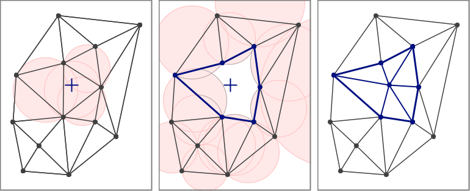

A Fast and Accurate Algorithm
for Natural Neighbor Interpolation
Introduction
The Tinfour open-source software library implements a fast and accurate algorithm for Natural Neighbor Interpolation. These notes describe that algorithm. They are provided here to assist investigators who wish to understand how the implementation works, to extend its functionality, or to implement their own versions of the Natural Neighbor technique.
Note: Readers seeking background information on the ideas underlying the Natural Neighbor Interpolation technique may find it useful to review the web article An Introduction to Natural Neighbor Interpolation. The discussion below draws heavily on the concepts, terminology, and conventions introduced in that article.
About Natural Neighbor Interpolation
Natural Neighbor Interpolation (NNI) estimates values for a surface constructed from a collection of irregularly distributed sample points. Because such sample sets have no readily identifiable pattern or organization, they are often referred to as unstructured data. Unstructured data sets are common in geophysical and scientific applications including elevation surveys, ocean-depth soundings, weather observations, and electric potential measurements over a surface. NNI has the advantage of constructing a smooth and visually pleasing representation of a surface that faithfully preserves data values at sample points.
How Natural Neighbor Interpolation Works
The Natural Neighbor concept was introduced by Robin Sibson in 1981 (see Sibson, 1981). At the time, Sibson was exploring the properties of the Voronoi diagram (or the Dirichlet tessellation, as it is also known). A Voronoi diagram is a structure which is studied in the branch of mathematics known as graph theory. It is formed from a set of unstructured data sample points that lie on a coordinate plane. The plane is partitioned into a collection of polygons, each containing a single sample point. These polygons represent the set of all points that are closer to the defining sample point than any other sample. The resulting structure covers the entire plane. The polygons in the interior region of the Voronoi are closed and have finite area. Those to the outside of the structure are unbounded and have an infinite area. The figure below shows an example of a Voronoi diagram formed from a set of unstructured data points.
Sibson's Technique
In his paper, Sibson considers what happens when a new point is inserted into the Voronoi diagram at the position where one wishes to obtain an interpolated value. As the figure below shows, when a point is added to the set of unstructured samples, it leads to the creation of a new containing polygon. The new polygon captures some of the area that was previously covered by its neighbors. In Sibson's terminology, these neighboring polygons and their associated sample points are the natural neighbors of the interpolation point. The process is illustrated in the figure below.
Sibson's technique estimates a value for the interpolation point by considering the relative area contributed by each polygon associated with the natural neighbors. The proportion of the new cell that was taken from each neighbor is used as a factor in a weighted average. The value for each neighbor is combined with its associated weight to compute an estimated value for at the interpolation coordinates. This calculation is shown in the expression below.
Challenges of the Voronoi diagram
One of the drawbacks of Sibson's original proposal was the large computational overhead required to perform an interpolation. The operation required modifying the Voronoi to introduce a new polygon, and then removing that polygon when the interpolation was complete. At the time, the processing cost of this operation was a significant obstacle to the adoption of Natural Neighbor Interpolation.
In the decades since Sibson's original paper, a number of authors have published techniques for streamlining the interpolation by replacing the Voronoi diagram with a related structure, the Delaunay triangulation.
A Solution Using the Delaunay Triangulation
Because of its relative simplicity and ease of implementation, the Delaunay provides an attractive alternative to the Voronoi diagram. The property that allows it to be used as an alternative is the fact that the planar forms of the Delaunay triangulation and the Voronoi diagram are dual graphs of each other. Informally speaking, the fact that these two structures are dual graphs means that any set of sample points that produces a unique Delaunay triangulation will also produce a corresponding Voronoi diagram.
It turns out that there are deep connections between the two structures (see Wikipedia, 2021). These connections allow software implementations to model the behavior of the Voronoi diagram without actually constructing one. This modeling technique does require the construction of an initial triangulation. But once it is established, a process can then use it to perform as many interpolations as desired without ever needing to modify the underlying structure. This approach eliminates a great deal of computational overhead and expedites the interpolation process. Furthermore, since the software accesses the underlying graph on a read-only basis, it can be used in multi-threaded applications to perform multiple interpolations as parallel processes.
Note: The use of the Delaunay triangulation as the basis of a Natural Neighbor algorithm is not unique to Tinfour. Earlier works that used this approach include Bourke (1989), Sambridge (1995), Watson (1997, 2001), Liang & Hale (2010), and others. In particular, Liang & Hale anticipated many of the elements and computations used in the Tinfour implementation. Their paper, A stable and fast implementation of natural neighbor interpolation also offers a good historical overview a number of different implementations of the Natural Neighbor concept.
How the Delaunay Models the Voronoi
To show how the Delaunay is used to model the Voronoi, it is necessary to introduce the concept of a circumcircle. For any properly formed triangle, there exists a unique circle called the circumcircle that passes through its three vertices. The center of the circumcircle is referred to as its circumcenter. The figure below illustrates two characteristics of a circumcircle that will be relevant later in these notes. First, the circumcenter can lie outside the bounds of its defining triangle. And, second, the circumcenter lies at the intersection of the three perpendicular bisectors of the triangle edges (Weisstein, 2021).
Circumcircles play an essential role in the creation of a Delaunay triangulation. The characteristic that distinguishes the Delaunay from other, arbitrary triangular networks is the empty-circle property. The empty-circle property requires that no circumcircle formed by the triangles in the Delaunay contains any vertex other than the three that define it. This property, which is also known as the Delaunay criterion, leads to a triangulated mesh with several desirable characteristics (Lucas, 2017). For interpolation purposes, the most important of these is that it is the basis of the dual-graph relationship between the Delaunay triangulation and the Voronoi diagram.
If a triangulation is properly Delaunay, then the circumcenters defined by its members correspond directly to the vertices that form the Voronoi diagram. The images below illustrate the relationships between two representative graphs.
These relationships become even more apparent when the two structures are overlaid in a composite image as shown below.
Modeling a Voronoi Insertion
Having introduced the relationship between the Voronoi and Delaunay, we can now consider how the Delaunay triangulation can be used to model the effects of inserting the interpolation point into the Voronoi diagram. A Voronoi can be constructed using the circumcircles from the Delaunay. If a new vertex is inserted into the dual-graph Delaunay, that collection of circumcircles will change and the resulting Voronoi will feature a polygon based on the inserted point. A brief consideration of the algorithm the Tinfour software package inserts a point into a Delaunay triangulation provides a conceptual basis for the modeling process.
Tinfour's Delaunay insertion operation uses an algorithm based on two well-known papers that were published simulataneously in issue 24(2) of The Compute Journal by Bowyer (1981) and Watson (1981). The key feature in this algorithm is the construction of a structure that the Tinfour implementation calls the Bowyer-Watson envelope. The process is illustrated in the figure below. If a new vertex were introduced at the interpolation point (shown as crosshairs in panel A), it would fall within the bounds of one or more existing circumcircles. Because this situation would violate the empty-circle property, edges are removed to create a cavity around the insertion point. The polygon bounding this cavity is the Bowyer-Watson envelope. Panel B shows that the remaining circumcircles no longer overlap the insertion point. Finally, the cavity is filled by adding new edges that tie the inserted vertex to the vertices in the Bowyer-Watson envelope as shown in panel C. The empty-circle property is restored and the triangulation is, once again, properly Delaunay.

To model the effects of the insertion process, the Natural Neighbor Interpolator does not need to perform an actual insertion. All it needs is a list of the edges that comprise the Bowyer-Watson envelope. The triangulation is not modified. The geometry of these edges is used in conjunction with the coordinates of the interpolation point to construct the triangles and circumcircles that would give rise to the new polygon in the Voronoi diagram. This construction becomes a short-persistence data object that is used for the Natural Neighbor calculation and then discarded.
The figure below shows the Bowyer-Watson envelope overlaid on the depiction of the triangulation. The area in blue is the new polygon. The region in pink covers the parts of the neighboring Voronoi cells that fall within the envelope. Since the region of the Delaunay that lies outside the envelope does not change, neither does the corresponding region of the dual-graph Voronoi. Thus the model is only required to process that region that is contained within the envelope. And because the unbounded regions of the Voronoi diagram are always outside the envelope, the interpolation code never has to deal with infinite quantities (something that is often cumbersome in software implementations).
With the underlying concepts in place, the interpolation process can now be summarized as follows:
- Given an interpolation point, find the Bowyer-Watson envelope for the insertion. Each vertex in this polygon is a natural neighbor to the interpolation point.
- Compute an unadjusted captured-area factor for each vertex in the Bowyer-Watson envelope:
- Compute the area of the enclosed part of its associated Voronoi cell using the original Delaunay structure
- Compute the area of the enclosed part of the modified Voronoi cell using the edges and circumcircles that would be constructed by inserting the new vertex into the Delaunay.
- Find the difference from the two computations. This is the unadjusted value for the area captured from the polygon containing the vertex of interest.
- When all captured-area factors are computed, normalize them so that the sum of the factors is one. The results are the weight factors for the set of vertices designated as the natural neighbors of the interpolation point.
- Compute a weighted sum of the data value (z value) for each vertex. The result is the estimated value computed at the interpolation coordinates.
The Area Calculations
For each vertex in the in the Bowyer-Watson envelope, we compute area values for the pre-insertion and post-insertion states of the Voronoi diagram using the shoelace formula which is also known as Gauss's area formula. Given the Cartesian coordinates for a potentially irregular but not self-intersecting polygon consisting of 3 or more vertices, the area is computed as:
The area computation is a piecewise sum of area contributions specified by the terms in the summation. Each summand represents the contribution of a single line segment. In the case of the last segment in the polygon, where i equals n, the index n+1 wraps around to 1.
Calculating the Pre-Insertion Area Component
The figure below illustrates the geometry for a calculation of the pre-insertion area. We label the vertices from the Bowyer Watson envelope using the uppercase letter B. A vertex B2 connects to four other vertices within the bounds of the Bowyer-Watson envelope B1, B3, V1, and V2. The circumcenters are labeled with the uppercase letter C. C1 designates the circumcenter for triangle B1B2V1 and, in general, Ci designates the circumcenter for the triangles formed as the algorithm traverses through the connecting triangles in a clockwise order. The variables M1 and M2 are used to indicate the midpoints of edges B1B2 and B2B3 respectively.
Again we note that although there is a complete Voronoi cell associated with vertex B2 we only need to compute the contributing terms that are unique to the pre-insertion area calculation. Those that would also be included in the post-insertion calculation (those that lie outside or on the edges of the Bowyer-Watson polygon) would drop out in when we compute the difference between the pre-insertion and post-insertion areas.
With these specifications, the components of the pre-insertion area is computed for the vertex of interest is specified as
Where n is the number of circumcenters from interior triangles associated with vertex B2. In the special case where there is only a single interior triangle, the summation term is omitted.
The geometry shown in the figure above illustrates the computation for the Voronoi cell containing vertex B2. With the appropriate assignment of indices, the computation can be applied for each of the vertices in the Bowyer-Watson envelope.
Calculating the Post-Insertion Area Component
The figure below illustrates the geometry for a calculation of the post-insertion area for vertex B2. Again, we note that Delaunay mesh is not actually modified. The computations are based on the geometry that would result if vertex U were inserted at the interpolation point (x,y). When computing the post-insertion area for vertex B2, we construct two new circumcenters, G1 and G2, for the adjacent triangles. The coordinates of these circumcenters is a function of the coordinates of U = (x,y).
The post-insertion area component is computed as:
Again, a value for each vertex in the envelope can be computed by applying the appropriate indices. The total captured area for the Voronoi cell associated with the vertex of interest, BK, is just
To compute the full set of weights, the implementation visits each vertex in the Bowyer-Watson polygon and performs the computations described above. Incidentally, the equation shown in the text includes parentheses that are not necessarily required from a mathematical point of view. In practice, however, it turns out that collecting the terms as shown in the expression results in a small but measureable improvement in the accuracy of the arithmetic calculations performed by the interpolator.
The Interpolated Result
When the weights for all vertices in the Bowyer-Watson envelope are computed, then the weights for each vertex can be normalized as:
The use of the Greek letter lambda is taken from the Sibson's original description of the Natural Neighbor Interpolation method. They can be combined with the z values from each of the vertices from the Bowyer-Watson envelope to compute an interpolated value for the surface at the interpolation coordinates:
Handling Circumcenters that are Outside the Envelope
The figures shown above illustrate a case where all the circumcenters required for the area calculations were inside the envelope. In cases where they lie outside the envelope, the same formulation applies. The fact that the edges of the Voronoi are perpendicular bisectors of the Delaunay edges means that circumcenters lying to the outside of the envelope will be collinear with the other vertices that form an area computation segment. Algebraically, the parts of the piecewise components that lie outside the envelope cancel out of the area computation. Thus, they make no contribution to the overall sum. No special handling is required.
Does it Work?
At the beginning of this article, I claimed that the algorithm it presents is fast and accurate Let's see if the implementation works as advertised.
Is it Fast?
We can test the speed of the implementation by taking a substantial input data set and performing a large number of interpolations. For these notes, I used a Lidar-based elevation survey (Pennsylvania, 2006, file 15001220PAS.las). This file contained a set of 1873220 unstructured sample points collected over the Southwest corner of Pennsylvania. The samples were spaced at roughly 6 feet (2 meters) apart. Values were interpolated for a raster (grid) with a cell spacing of 6 feet. This configuration resulted in a 1667-by-1667 output raster consisting of about 2.8 million cells. Thus, the test required 2.8 million interpolations for completion.
Test were performed using both a single thread and multiple concurrent threads for processing. Timing results are shown in the table below.
| # Threads | Processing Time | Interpolations/Sec |
|---|---|---|
| 1 | 2.45 sec. | 1.16 million |
| 2 | 1.38 sec. | 2.01 million |
| 4 | 0.81 sec. | 3.43 million |
| 6 | 0.64 sec. | 4.34 million |
In addition to the time required to process the grid points, the Natural Neighbor Interpolation does have one significant overhead item. Before processing can begin, it is necessary to construct an instance of a Delaunay triangulation from the sample points. So in addition to the times shown in the table above, both tests required an average of 1.44 seconds to initialize the triangulation. Because the interpolator accesses the Delaunay triangulation on a read-only basis, the multi-threaded test was able to share a single instance of the triangulation across threads.
The relatively small run times required to perform a large number of interpolations suggests that the interpolator is sufficiently fast for many geospatial and geophysical analysis applications.
Is it Accurate?
Given a set of unstructured sample points collected at arbitrary positions over a surface (elevation, temperature, electric potential, etc.), it is natural to wonder how well an interpolator predicts the value of that surface at a specific pair of coordinates. That is an interesting and important question. But, before we can investigate it, we need to be sure that the interpolator itself is correctly implemented. The Natural Neighbor Interpolation is relatively complex and it would be easy for a weak implementation to dilute the accuracy of its results.
Fortunately, Sibson's original work leads to a straightforward and unambiguous test that allows us to judge whether an implementation is correct. Although this test has been largely overlooked in the published literature, it provides a single numerical value that indicates the accuracy of an implementation.
To describe the Natural Neighbor test criteria, we add a little detail to the interpolator equation. Recall that the lambda weight factors are a function of the interpolation coordinates. So, taking the interpolation point as
the interpolation equation can be written as
Sibson identified what he called the Local Coordinates Property (Sibson, 1980, p. 152) which leads to the following relationships.

Although the equations for and resemble the equation for the estimator that was given above, and are not estimators. Through his demonstration of the local coordinates property, Sibson showed that the lambda values computed in the course of an interpolation could be used to map the Cartesian coordinates of the natural neighbor points back to the exact coordinates of the interpolation point. This fact tells us that, if the Tinfour implementation calculates its lambda values correctly, a backward computation of the interpolation coordinates should produce just the values that were supplied as its inputs.
In practice, of course, the backward computation will seldom be perfect. Round off errors and the limits of floating-point precision inevitably lead to small deviations in the computed values. But if those deviations are small enough, it seems reasonable to say that the interpolation is implemented correctly. Tinfour's Natural Neighbor Interpolator includes a method called getBarycentricDeviation() that calculates the distance between the input coordinates and their computed counterparts. This deviation value provides a numeric quality score that can be used to assess how well the interpolator works.
During development of the Tinfour Natural Neighbor Interpolator, the deviation value proved useful as a way of comparing the advantages of alternate approaches or experimental changes to the software. A number of code refinements in the interpolator were verified using the deviation value.
The Natural Neighbor implemention was tested using the Pennsylvania data set that was introduced above. The average deviation for 2.8 million interpolations was 1.73x10-15 feet. The maximum deviation was 2.26x10-13 feet. The magnitude of these values is much smaller than the 6 foot spacing of the data samples. Based on that, it seems safe to say that the implementation is correct and free of significant numerical issues.
Future Work
Although the Tinfour Natural Neighbor Interpolator is useful as implemented, there are opportunities for future work.
One shortcoming in the current work is the lack of a rigorous mathematical analysis of the implementation. The derivation of the technique was conducted without formal proofs or a deep study of the numerical issues related to its implementation. A thorough mathematical review of the algorithm used by Tinfour would establish a solid foundation for the technique.
Additionally, the current implementation does not address techniques for computing surface derivatives. Sibson showed that the surface produced by the Natural Neighbor Interpolation has first-derivative continuity at all points except at the positions of the sample vertices themselves. The coefficients described above are differentiable functions of the interpolation coordinates (x,y). Surface derivatives could be computed using the coefficients. However, the number of terms involved in the calculation is large and the coding effort substantial. So the implementation of surface derivatives for the Natural Neighbor Interpolator remains a project for future work.
Sibson himself explored ways of producing a surface that had true first-derivative continuity at all points. Other authors have described approaches to continuity. Even so, a good solution for this issue is an open problem in the investigation of Natural Neighbor Interpolation.
Conclusion
These notes covered the major elements of the algorithm used by the Tinfour software library. Additional details are described by the comments embedded in the source code for the Tinfour Natural Neighbor Interpolator class. All source code for the interpolator, including the supporting software library and example applications is provided by the Tinfour Software Project at http://tinfour.org
References
Bourke, P. (1989). Triangulate — Efficient triangulation algorithm suitable for terrain modeling.
Accessed February 2021 from
http://paulbourke.net/papers/triangulate/
Bowyer, Adrian (1981). Computing Dirichlet tessellations. The Compute Journal 24(2) pp. 162-166.
Liang, L. & Hale, D. (2010). A stable and fast implementation of natural neighbor interpolation.
Accessed March 2021 from
https://citeseerx.ist.psu.edu/viewdoc/download?doi=10.1.1.174.2191&rep=rep1&type=pdf
Lucas, G.W. (2017). An introduction to Delaunay triangulations.
Accessed March 2021 from
https://gwlucastrig.github.io/TinfourDocs/DelaunayIntro/index.html
Lucas, G. W. (2021). Data elements and algorithms for the Tinfour library.
Accessed March 2021 from
https://gwlucastrig.github.io/TinfourDocs/TinfourAlgorithmsAndDataElements.pdf
Pennsylvania, Commonwealth of, Department of Conservation and
Natural Resources, Bureau of Topographic and Geologic Survey (2006).
PAMAP Program LAS Files (LiDAR Data of Pennsylvania).
Accessed March 2021 from
http://www.pasda.psu.edu
Sambridge, M., Braun, J. & McQueen H. (1995). "Geophysical
parametrization and interpolation of irregular data using natural neighbors".
Geophysical Journal International Volume 122, Issue 3, December 1995, pg. 837-857.
Accessed March 2021 from
https://academic.oup.com/gji/article/122/3/837/718634
Sibson, R. (1980). A vector identity for the Dirichlet tessellation. Mathematical Proceedings of the Cambridge Philosophical Society, 87(1), pp.151-155. doi:10.1017/S0305004100056589.
Sibson, R. (1981), A brief description of natural neighbor interpolation. Interpolating multivariate data, John Wiley&Sons, New York, 1981, pp. 21-36.
Watson, David F. (1981). Computing the n-dimensional Delaunay tessellation with application to Voronoi polytropes, The Compute Journal 24(2), pp. 167-173.
Weisstein, Eric W.(2021). Circumcircle. From MathWorld — A Wolfram Web Resource
Accessed March 2021 from https://mathworld.wolfram.com/Circumcircle.html
Wikipedia (2021). Delaunay triangulation, Relationship with the Voronoi diagram .
Accessed February 2021 from
https://en.wikipedia.org/wiki/Delaunay_triangulation#Relationship_with_the_Voronoi_diagram